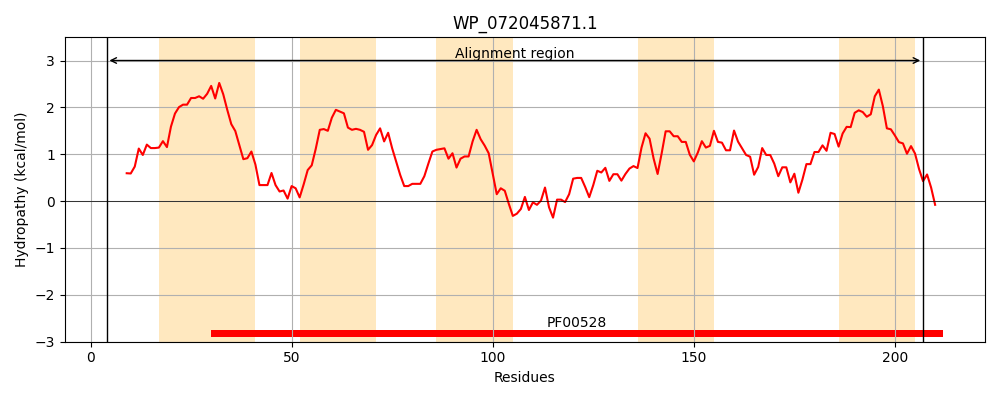
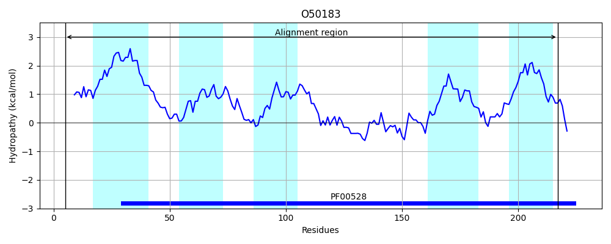
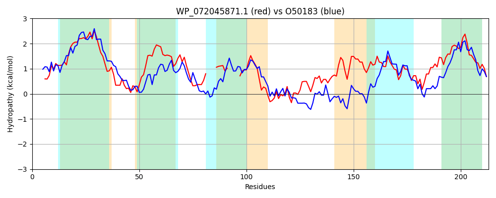

Hit Accession: O50183
Hit TCID: 3.A.1.3.11
Hit Description: gnl|BL_ORD_ID|7250 gnl|TC-DB|O50183|3.A.1.3.11 Arginine/ornithine transport protein AotM - Pseudomonas aeruginosa.
Mach Len: 213
e:0.000000
Query TMS Count : 5
Hit TMS Count: 5
TMS-Overlap Score: 3.650000
Predicted Substrates:CHEBI:7784;ornithine, CHEBI:2643;arginine
BLAST Alignment:
Score: 292 , Bit scores: 117 bits, E-value: 1.9e-32, Alignment length: 213, Percentage identity: 34
Query: 4 WGVIWSVRDSFIAGLFATLELFITAALAALIIGIALCYFSEYQKKVINRIIIGSVSLMRAIPFLILAYLLYYGLPQLGISME----PWTAGL-----LALIIYHGAYFFEILRSQRRVFSGGYIEAAIAQGFSRYAIFRRIILPNIISSALPLIGNQLIICLKDTAFLSIITVQEITAAANSVQATYFIPFNAFIVAIGLYWAISILLELLIK 207
+ VIW + GL TL+L + L L++ + L ++ ++N ++R P L+ +L+YYGL Q E PW + LA I AY EIL + G IEAA A G SR ++RRI+LP+ + ALP N++I+ L+ T+ SI+T+ +IT AA +V + Y++PF AFI A Y ++ +L L K
Sbjct: 5 FSVIWDSLPLYFDGLLVTLKLLSISLLIGLLLAVPLALMRVSKQPLVNFPAWLYTYVIRGTPMLVQLFLIYYGLAQFDAVRESALWPWLSNASFCACLAFAINTSAYTAEILAGSLKATPHGEIEAAKAMGMSRLKMYRRILLPSALRRALPQYSNEVIMMLQTTSLASIVTLVDITGAARTVYSQYYLPFEAFITAGLFYLCLTFILVRLFK 217 | Protein Hydropathy Plots: |
|---|
|  |  |
Pairwise Alignment-Hydropathy Plot:
|
|---|
|  |